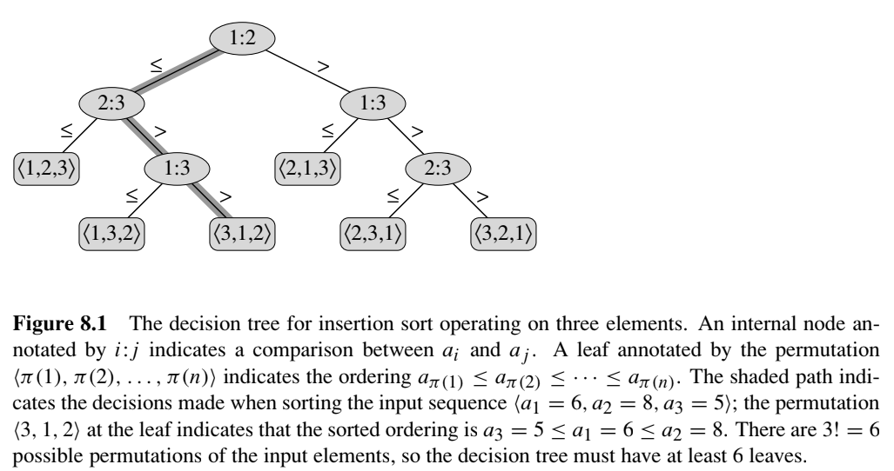
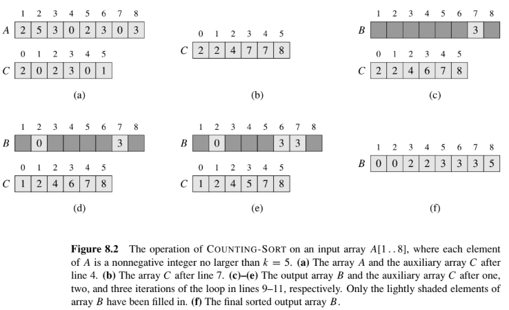
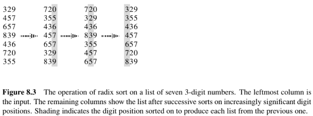
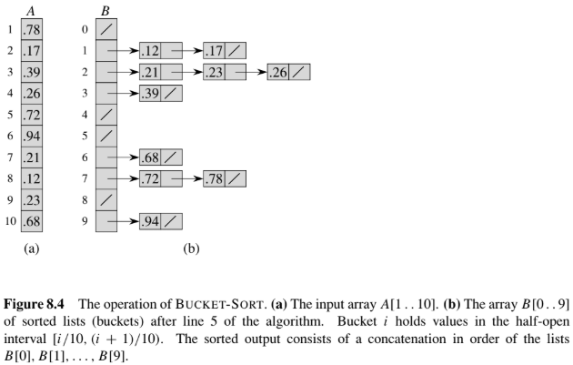

第一節 比較排序的下界
比較排序概論
我們已知目前排序演算法的的下界不會低於 $O(n \lg n)$。但是如何證明這件事，就需要用下列 Figure 8.1 的 Decision Tree 來說明：

（圖片來源：Introduction to Algorithms, 2nd ed., Figure 8.1）
而我們可以依圖片統計出看出三個對應關係
- 內部節點 (有子節點的節點)：決定是哪兩個索引的值要比較 (例如 a 陣列的 decision tree，根結點是 1:2 代表 a[1] 跟 a[2] 比較)
- 葉節點 (無子節點的節點)：決定最終的排序
- 分支：決定比較的結果是 $\le$ 或 $>$
<補充> 這邊用 $\le$ 而不是 $<$ 是為了 stable，即不改變原本值大小相同的元素之間的排列順序
時間複雜度的 Worst Case
為了分析 worst case，我們要統計出最小以及最大的可能性：
- 葉節點 $l \ge n!$：$n$ 個不同的元素的排列方式有 $n!$ 種，因此葉節點 $\ge$ $n!$
- 葉節點 $l \le 2^h$：二元樹第 0 層有 $2^0=1$ 個節點 (根節點)、第 1 層有 $2^1=2$ 個節點、第 2 層有 $2^2=4$ 個節點…以此類推，一個二元樹的高度為 h (0 ~ h 層)，因此葉節點 $\le 2^h$
由此可得出 $n! \le l \le 2^h$
$\Rightarrow 2^h \ge n! \Rightarrow h \ge \lg(n!) = \Omega(n \lg n)$
我們得出了 $h \ge \lg(n!) = \Omega(n \lg n)$，而 h 代表的是分支數，分支數又決定了比較的次數，因此可以知道比較排序最低也需要 $\Omega(n \lg n)$ 的時間
第二節 Counting Sort
Pseudocode
1 | COUNTING-SORT(A, B, k) |
說明

（圖片來源：Introduction to Algorithms, 2nd ed., Figure 8.2）
依據上面的圖，一步步說明：
- A 陣列存原本未排序的陣列
- B 陣列存排序後的陣列
- C 陣列存累加後的前綴和
輸入 $A = \langle 2, 5, 3, 0, 2, 3, 0, 3 \rangle$，$k = 5$：
| 步驟 | 陣列 $C$ | 說明 |
|---|---|---|
| 計數後 | [2, 0, 2, 3, 0, 1] | 值 0 出現 2 次、2 出現 2 次、3 出現 3 次、5 出現 1 次 |
| 累加後 | [2, 2, 4, 7, 7, 8] | $C[i]$ 變成$\le i$ 的元素個數 |
放置過程（從 $A[8]=3$ 開始往前）：
| 處理 $A[j]$ | 放到 $B$ 的位置 $C[A[j]]$ | 放置後 $C[A[j]] - 1$ |
|---|---|---|
| $A[8]=3$ | $B[7]=3$ | $C[3]: 7 \to 6$ |
| $A[7]=0$ | $B[2]=0$ | $C[0]: 2 \to 1$ |
| $A[6]=3$ | $B[6]=3$ | $C[3]: 6 \to 5$ |
| $\cdots$ | $\cdots$ | $\cdots$ |
最終輸出 $B = \langle 0, 0, 2, 2, 3, 3, 3, 5 \rangle$
| 項目 | 結果 |
|---|---|
| 時間複雜度 | $\Theta(n + k)$；當 $k = O(n)$ 時為 $\Theta(n)$ |
| 空間複雜度 | $\Theta(n + k)$（需要 $B$ 與 $C$ 兩個輔助陣列） |
| 穩定性 | 穩定 (stable) |
| 原地排序 | 否 (not in-place) |
第三節 Radix Sort
Pseudocode
1 | RADIX-SORT(A, d) |
說明

（圖片來源：Introduction to Algorithms, 2nd ed., Figure 8.3）
輸入 7 個三位數：329, 457, 657, 839, 436, 720, 355
| 原始 | 排個位後 | 排十位後 | 排百位後 |
|---|---|---|---|
| 329 | 720 | 720 | 329 |
| 457 | 355 | 329 | 355 |
| 657 | 436 | 436 | 436 |
| 839 | 457 | 839 | 457 |
| 436 | 657 | 355 | 657 |
| 720 | 329 | 457 | 720 |
| 355 | 839 | 657 | 839 |
注意排十位後那欄裡的 355 與 457：兩者十位都是 5，但 355 排在 457 前面，這個順序是它們在 排個位數字 階段（5 < 7）就確定的，因為是 stable 的排序方法才可以保留這個順序，因此這說明了為何需要使用 stable 的排序方法做
當 $d$ 為常數且 $k = O(n)$ 時，Radix Sort 為 $\Theta(n)$
第四節 Bucket Sort
Pseudocode
1 | BUCKET-SORT(A) |
說明

因為輸入假設是均勻分布的，平均而言每個桶只會分到 $O(1)$ 個元素，桶內排序成本因此被壓到常數，平均時間複雜度為 $O(n)$，若極端分布的話會降為 $O(n^2)$
輸入 $A = \langle .78, .17, .39, .26, .72, .94, .21, .12, .23, .68 \rangle$，$n=10$，桶 $i$ 負責 $[i/10, (i+1)/10)$：
| 桶 | 內容（排序後） |
|---|---|
| 1 | .12 → .17 |
| 2 | .21 → .23 → .26 |
| 3 | .39 |
| 6 | .68 |
| 7 | .72 → .78 |
| 9 | .94 |
連接後即為已排序結果（桶 0、4、5、8 為空）
$B = \langle .12, .17, .21, .23, .26, .39, .68, .72, .78, .94 \rangle$
| 情況 | 時間 | 條件 |
|---|---|---|
| 平均 (average) | $\Theta(n)$ | 輸入在 $[0,1)$ 均勻分布 |
| 最壞 (worst) | $\Theta(n^2)$ | 所有元素擠進同一個桶 |
總結
| 演算法 | 時間複雜度 | Stable | In Place | 前提假設 | 是否比較排序 |
|---|---|---|---|---|---|
| 比較排序下界 | $\Omega(n \lg n)$ | — | — | 僅靠比較 | — |
| Counting Sort | $\Theta(n+k)$ | 是 | 否 | 非負整數，值域 $k$ 小 | 否 |
| Radix Sort | $\Theta(d(n+k))$ | 是 | 否 | 可逐位拆解、位數 $d$ 少 | 否 |
| Bucket Sort | 平均 $\Theta(n)$ 最壞 $\Theta(n^2)$ |
是 | 否 | 在 $[0,1)$ 均勻分布 | 否 |
參考文獻
T. H. Cormen, C. E. Leiserson, R. L. Rivest, and C. Stein, Introduction to Algorithms, Second Ed., The MIT Press, 2001.